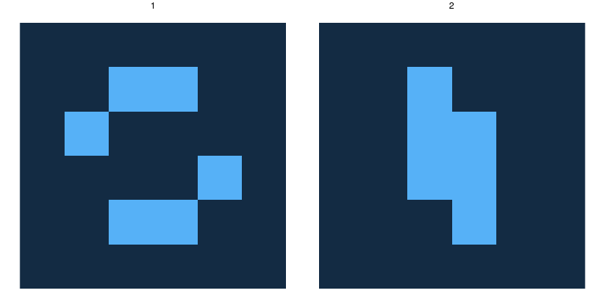
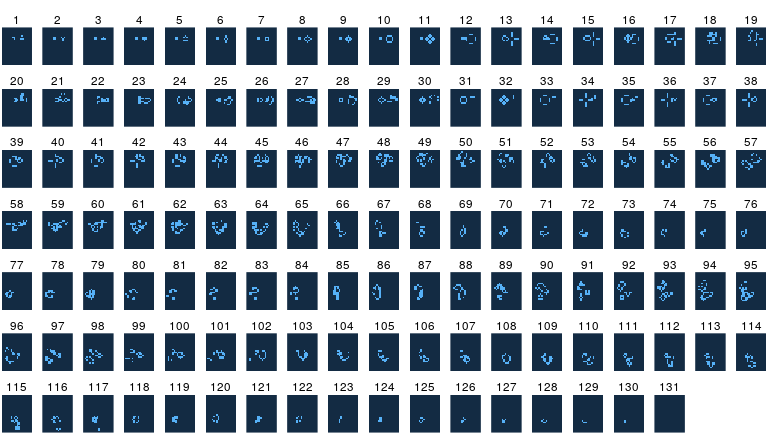
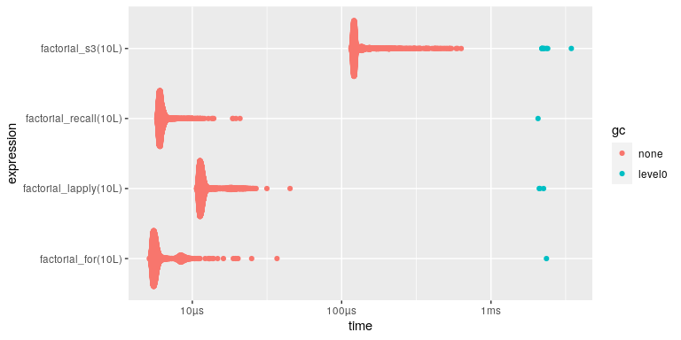

「え!? ifもforも使わずにライフゲームの実装を!?」
「できらR!!」
Tokyo.R 86
Atusy
2020-5-23
Atusy

- R Markdown関係のコミッタ
- felp、ftExtra、minidownなどパッケージを作ってはTokyoRで紹介している
- Pythonでデータ分析してる
 blog.atusy.net
blog.atusy.net @Atsushi776
@Atsushi776


今日の話
sionnさんのPythonによる
「え!? ifもforも使わずにライフゲームの実装を!? 」「できらぁ!!」
のR版です。
lifegameとは？
生命の誕生、進化、淘汰などをモデル化したシミュレーションゲーム (Conway, 1970)

ルール
- 誕生
死亡セルに隣接する生存セルが3つなら次世代が誕生。
- 生存
生存セルに隣接する生存セルが2つか3つならば、次世代も生存。
- 過疎・過密
誕生も生存もしないセルは過疎・過密として死滅。
追加ルール
- 可視化を除いてRレベルでのif文、for文、apply族禁止
- 可視化を除いてbaseに限定
- パッケージ化
lifegame
Diehard実行例
注: 時間の都合でアニメーションGIF化できませんでした。
Diehard実行結果

色んなループで階乗
お約束
prod(seq(n))factorial(n)gamma(n + 1L)
とかで解けるとか言わない
for
フツー
lappy
前回値の利用は面倒
再帰
普通はifを使わないと終了できない
S3再帰
if不要
S3再帰は劇的に遅い
ベンチマーク可視化

Tip: Rのforは遅いと誰が言った？
S3再帰の使い道
遅いのにあるの？
dplyr::mutate ≦ 0.8.5
- 入力が
data.frameならtibbleに変換 - 再帰的に
mutate - 出力を
data.frameに戻す
ifを使わない工夫
トリッキーなif else
nが1以下なら"end"、違えば"continue"を返す